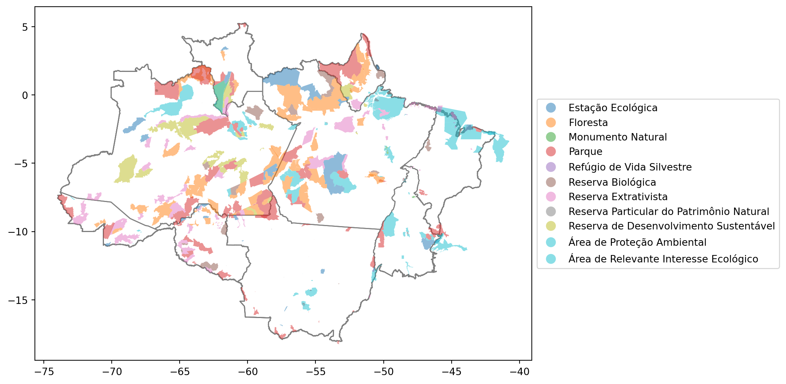

14 Unidades de Consrvação.
14.1 Unidade de Conservação
Áreas naturais relevantes para o Brasil são conhecidas como Unidades de Conservação e são protegidas por Lei. Objetivo é garantir a preservação da biodiversidade
Viver em um meio ambiente ecologicamente equilibrado é um direito de todo brasileiro, garantido na Constituição Federal. Há muito o ser humano reconhece a necessidade de proteger áreas naturais com características específicas, salvaguardando fauna, flora, rios e mares, elementos que precisam coexistir para haver equilíbrio na natureza. No Brasil, país considerado megabiodiverso, essas áreas são delimitadas, denominadas Unidades de Conservação (UC) e reguladas por lei.
Todas as unidades de conservação são espaços territoriais, incluindo as águas jurisdicionais, com características naturais relevantes, que têm como objetivo a conservação da natureza. Cada uma delas recebe uma classificação diferente de acordo com suas características e objetivos a serem atingidos.
Segundo o secretário de Ecoturismo do Ministério do Meio Ambiente (MMA), André Germanos, cada UC recebe uma denominação diferente, de acordo com seu nível de proteção exercida. “Temos locais, biomas, regiões que precisam ser preservadas por conta de alguma peculiaridade. Algumas delas, por exemplo, são protegidas simplesmente porque têm uma beleza cênica excepcional”, explica o secretário. “Se por um lado temos a beleza cênica, temos do outro a proteção ambiental de fato, que é a preocupação com a fauna e flora. Elas podem ser destinadas à exploração sustentável de recursos naturais, preservação total do ecossistema, realização de pesquisas, visitação para promover a educação ambiental, entre outras.”
A Lei nº 9.985, de 2000, instituiu o Sistema Nacional de Unidades de Conservação (SNUC), que definiu a UC como um espaço territorial e seus recursos ambientais, incluindo as águas jurisdicionais, com características naturais relevantes. O SNUC também separou as áreas em dois tipos: Unidades de Proteção Integral e Unidades de Uso Sustentável. A primeira é subdividida em cinco categorias que possuem normas bastante restritas e são mais voltadas para a pesquisa e conservação da biodiversidade. Já as sete categorias de Unidades de Uso Sustentável são mais voltadas para visitação e atividades educativas e uso sustentável de seus recursos.
As Unidades de Proteção Integral são unidades de conservação de fundamental importância para a preservação de ecossistemas, proporcionado pesquisas científicas, manejo e educação ambiental na busca pela conservação do meio ambiente. Elas são divididas em Unidades de Proteção Integral e de Uso Sustentável. Fazem parte da primeira categoria Estação Ecológica, Reserva Biológica, Parque Nacional, Monumento Natural e Refúgio da Vida Silvestre. A segunda categoria abrange Área de Proteção Ambiental, Floresta Nacional, Área de Relevante Interesse Ecológico, Reserva Extrativista, Reserva da Fauna, Reserva Extrativista, Reserva de Desenvolvimento Sustentável e Reserva Particular do Patrimônio Natural.
Zoneamento – Ainda que as Unidades de Uso Sustentável aliem a preservação ambiental à exploração sustentável dos recursos naturais cada pedacinho das UCs recebe uma denominação diferente. É o chamado zoneamento, um processo que determina que usos serão dados às regiões que ficam dentro das áreas protegidas, como explica Ugo Vercillo, analista ambiental da Coordenação de Ações Integradas para Conservação de Espécies do Instituto Chico Mendes de Conservação da Biodiversidade (ICMBio), órgão ligado ao MMA e responsável pelas unidades de conservação.
“Depois que se delimita a área de conservação, outros zoneamentos são delimitados dentro dessa área protegida”, explica o biólogo. “Essa zona pode ser uma área intangível, ou seja, onde ninguém tem acesso, ou pode ser uma área de uso múltiplo. Cada uma dessas áreas dentro de uma UC tem aptidões diferentes.”
O zoneamento é definido pelo Plano de Manejo, que também inclui medidas para promover a integração da UC à vida econômica e social das comunidades vizinhas, o que é essencial para que implementação da unidade seja mais eficiente.
fonte:Ministério do Meio Ambiente
14.1.1 Quantificação das Unidades de Conservação
14.1.2 Unidade de Conservação por Categoria
| Categoria da Unidade de Conservação | Quantidade | Área (km²) |
|---|---|---|
| Estação Ecológica | 19 | 114390.7597 |
| Floresta | 56 | 306729.0213 |
| Monumento Natural | 5 | 347.1177 |
| Parque | 81 | 299215.2247 |
| Refúgio de Vida Silvestre | 6 | 471.2235 |
| Reserva Biológica | 16 | 52965.8835 |
| Reserva Extrativista | 81 | 152665.4854 |
| Reserva Particular do Patrimônio Natural | 20 | 284.6641 |
| Reserva de Desenvolvimento Sustentável | 26 | 134330.2494 |
| Área de Proteção Ambiental | 57 | 285467.6319 |
| Área de Relevante Interesse Ecológico | 6 | 445.9002 |